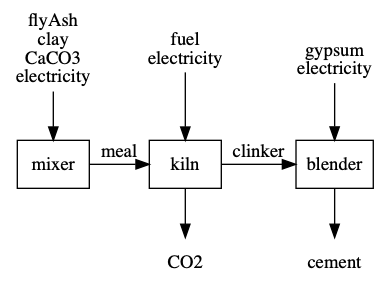
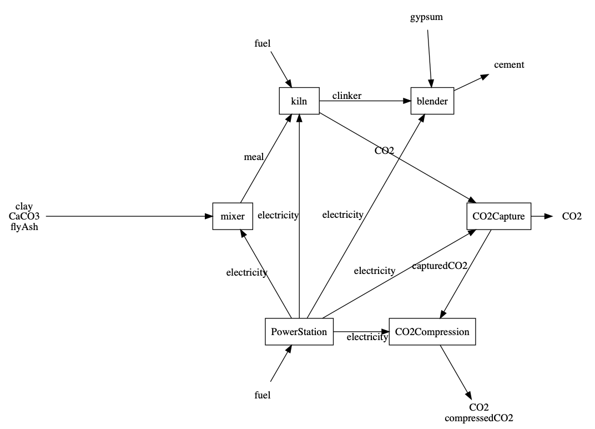
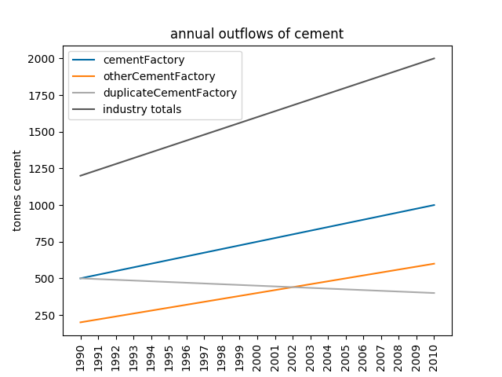

NOTE: This introductory document still must be updated with the latest feature set¶
What is blackblox.py?¶
blackblox is a calculator for “black box” systems, ranging from single unit processes to factories with branching chains of processes.
Unit Processes¶
Unit processes are the smallest”block” in blackblox. Each unit process has a set of inflows and outflows and a set of specified relationships between the process flows. Then, given a quantity for one inflow or outflow, the quantities of the remaining inflows and outflows can be calculated.
Defining unit processes¶
A unit process is defined by two tables:
Calculations Table¶
The first specifies the relationships between inflows and outflows, with each row listing two substances; whether each substance is an inflow, an outflow, or a flow internal to the unit process; the type of calculation that would generate the quantity of the second substance if the quantity of the first substance is known, and the name of the variable (if any) used in that calculation.
The calculation types must be those available in the program’s calculator library. The substance variable names are user specified. It is also possible to define special substance names (e.g. “fuel”) to allow the substance to be defined in the variables table (e.g. “fuel type”) and also have properties defined elsewhere (e.g. HHV and combustion emissions)
e.g.
| KnownQty | k_QtyFrom | UnknownQty | u_QtyTo | Calculation | Variable |
|---|---|---|---|---|---|
| clinker | output | CaO | tmp | Ratio | CaO_Clinker |
| CaO | tmp | CaCO3 | tmp | MolMassRatio | none |
| CaCO3 | tmp | meal | input | Ratio | CaCO3_Meal |
| clinker | output | energyFuel | tmp | Ratio | fuelDemand |
| CaCO3 | tmp | CO2 | output | MolMassRatio | none |
| energyFuel | tmp | fuel | input | Combustion | combustEff |
| clinker | output | electricity | input | Ratio | elecDemand |
There is also a feature
Variables Table¶
The second provides the values of the variables named in the calculations table. Separating the values into their own table allows for the same unit process to be run in different configurations(e.g. different efficiencies or fuel types).
e.g.
| scenario | fuelDemand | fuelType | CaO_Clinker | CaCO3_Meal | combustEff | elecDemand |
|---|---|---|---|---|---|---|
| meta-units | (mj /t clinker) | name | (t/t) | (t/t) | (%) | (mj/t clinker) |
| default | 3.6 | coal | 0.75 | 0.8 | 1 | 0.2 |
| EU-old | 3.6 | coal | 0.75 | 0.8 | 1 | 0.2 |
| EU-bat | 3 | charcoal | 0.65 | 0.8 | 1 | 0.1 |
| EU-typ | 3.2 | coal | 0.67 | 0.8 | 1 | 0.1 |
Balancing unit processes¶
Balancing a unit process calculates the quantity of all inflows and outflows of that unit process. To balance a unit process, the following arguments must be provided:
- the quantity of one inflow or outflow
- the name of that inflow or outflow substance
- whether the substance is an inflow or outflow
- the name of the configuration scenario to use from the variables table.
All arguments besides the quantity can be optional, if default values have been specified for the unit process.
After calculating all flows based on the user input, blackblox then checks for whether the mass and energy flows are balanced, and either raises an exception or, by default, creates an ‘UKNOWN’ balancer flow where needed.
blackblox assumes that flows are mass by defautl. It decides if a flow is an energy flow based on whether it begins or end with an energy-signifier string (such as ‘energy’, ‘heat’, or ‘electricity’), which the user can specify.
N.B. When processing fuel combustion, blackblox writes an “energy in [fuelname]” flow to the inflows dictionary, to balance the energy of combustion.
Unit Table Library¶
A library table with a list to the locations of all the unit processes available will allow you to not have to enter in the data every time the unit process function is called.
e.g.
| name | product | productType | varFile | varSheet | calcFile | calcSheet | meta-notes |
|---|---|---|---|---|---|---|---|
| kiln | clinker | output | excelData/cementUnits.xlsx | var clinker kiln | excelData/cementUnits.xlsx | c clinker kiln | none |
| blender | cement | output | excelData/cementUnits.xlsx | var cement blender | excelData/cementUnits.xlsx | c cement blender | none |
| mixer | meal | output | excelData/cementUnits.xlsx | var meal mixer | excelData/cementUnits.xlsx | c meal mixer | none |
Process Chain¶
A process chain is a linear collection of one or more connected unit processes, where an outflow of a preceding unit process is an inflow of the following unit process.
Defining a chain¶
A process chain is defined by a table with a list of unit processes with an inflow and outflow to each, where the outflow of a unit process must be the inflow into the next unit process. When the process chain is first used, an initializalion process creates each of the unit processes, if they do not already exist, and verifies that the inflows and outflows specified in the chain table exist for the corresponding unit processes.
e.g.
| Inflow | Process | Outflow |
|---|---|---|
| CaCO3 | mixer | meal |
| meal | kiln | clinker |
| clinker | blender | cement |
Balancing a chain¶
Balancing a chain calculates the quantity of all inflows and outflows of each unit process in the chain, either from first inflow to last outflow or from last outflow to first inflow. To balance a chain, the following arguments must be provided:
- the quantity of one inflow or outflow somwhere in the chain
- the name of that inflow or outflow substance
- the name of the configuration scenario to use from the variables table.
- the name of the unit process in the chain, if the specified flow is not an iflow into the first process or an outflow of the last proces.
All arguments besides the quantity can be optional, if default values have been specified for the process chain.
Balancing a chain returns a dictionary with both the calculated inflows and outflows for each unit process, as well as the the overall inflows and outflows.
Generating a chain diagram¶
After a chain has been defined, a process flow diagram of the chain can be generated.
E.g.

Factory¶
A factory is a collection of one or more connected process chains, where the inflow of outflow of any unit process within any chain can be the inflow or outflow of any other chain. A factory has a single main chain, and zero or more auxiliary chains. By specifying an input or output quantity to the main chain, it is possible to calculate the inflows and outflows of all processes within the chain.
Defining a factory¶
A factory is defined by two tables: one that lists the chains (and their file locations) and another that lists the connections between the chains. Factory data can be in seperate spreadsheets or in a single excel workbook.
Factory chains table¶
This table specifies the location of the proces chain data used in the factory, as well as the primary product and whether that product is an inflow or outflow of the chain. The first chain of the chain list is assumed to be the main product chain, but otherwise it doesn’t matter. The chains can either be in the same file, if an excel workbook, or in a seperate file.
e.g.
| ChainName | ChainProduct | Product_IO | ChainFile | ChainSheet |
|---|---|---|---|---|
| cement | cement | outflow | here | Cement Chain |
| CO2capture | CO2 | inflow | here | CO2 Capture |
| power | electricity | outflow | here | Power Chain |
Factory connections table
The factory connections table specifies how the chains connect, including the origin process chain and unit process, the destination chain, the connecting product, and whether the product is an inflow or outflow of the origin and destination. The connections table is order depedent, and the first chain should always be the main chain.
e.g.
| OriginChain | OriginProcess | Product | Product_IO_of_Origin | Product_IO_of_Destination | DestinationChain |
|---|---|---|---|---|---|
| cement | kiln | CO2 | outflow | inflow | CO2capture |
| cement | all | electricity | inflow | outflow | power |
| CO2capture | all | electricity | inflow | outflow | power |
It is also possible to specify recycling flows in the connections table, if a Destination Unit is also provided. (The optional destination unit can be used to send flows to intermediate unit processes in chains.) Currently two types of recycling are usable:
- 1-to-1 replacement: allows for a recycle flow to replace a flow in another unit process, given that is a 1-to-1 correspondent and does not affect other flows in unit process
- energy replacing fuel: allows for recycled energy to replace energy generated from a fuel in a unit process that has a combustion calculation. The emission outflows (e.g. CO2) and inflow of oxygen are also recalculated.
It is possible to specify a purge fraction of the initial flow, as well as a maximum percentage of the existing flow that the recycled flow can replace. There can be recycling flow leftover, which is treated as a normal output. If there is insufficient recycling flow to fully replace the existing flow, it is only partially replaced. A single flow can be recycled into multiple units, by specifying each connection as a new line in the table, but only up to the original quantity of the recycling flow.
Balancing a factory¶
A factory is balanced on a single quantity of the main product and using a single scenario of variables for the whole factory. Balancing a factory returns a nested dictionary with the inflows and outflows of the factory, every chain, and every unit process. Optionally, the data can be outputted to an Excel workbook with sheets for:
- Total factory inflows and outflows
- A matrix for all inflow from every unit process
- A matrix for all outflows from every unit process
- A list of all internal flows/connections, both within chains and
- Inflows for each chain unit process and chain totals (per chain)
- Outflows for each chain unit process and chain totals (per chain)
By default, the data is divided into mass and energy flows, if energy flow name signifiers are provided, with totals for both mass and energy flows.
Generating a factory diagram¶
After a factory has been defined, a process flow diagram of the factory can be generated. However, due to the limitations of the diagram rendering software, they are unlikely to be pretty.
E.g.
Industries¶
The largest block is currently an “Industry”, which is a collection of one or more factories that produce one or more products.
Defining an Industry¶
An industry is defined by a factory list table, which has the name of each factory and location of its data.
E.g.
| Factory Name | Factory File | Factory Chains Sheet | Factory Connections Sheet |
|---|---|---|---|
| cementFactory | excelData/cementFactory.xlsx | Chain List | Connections |
| duplicateCementFactory | excelData/cementFactory.xlsx | Chain List | Connections |
| otherCementFactory | excelData/otherCementFactory.xlsx | Chain List | Connections |
| clinkerFactory | excelData/clinkerFactory.xlsx | Chain List | Connections |
Balancing an Industry¶
An industry can be balanced by specifying the output product quantity for each factory, and the scenario of variables for each factory. It is possible to specify each of these absolutely for each factory, or relative to the total output of each product. It is possible to mix absolute and relative specifications in an industry, but it must be the same for each product. It is also possible to batch-balance the industries on the same output quantity but using different scenarios of variable.
E.g. Absolute Product and Scenarios
| Factory Name | Factory Product | Product Qty | Scenario |
|---|---|---|---|
| cementFactory | cement | 500 | EU-typ |
| otherCementFactory | cement | 200 | EU-old |
| duplicateCementFactory | same_cement | 500 | EU-typ |
| clinkerFactory | clinker | 50 | EU-bat |
E.g. Relative products and scenarios
| Factory Name | Factory Product | Product Qty | Scenario |
|---|---|---|---|
| industry | cement | 1200 | EU-typ |
| cementFactory | cement | 0.4 | |
| otherCementFactory | cement | 0.5 | |
| duplicateCementFactory | cement | 0.1 | |
| clinkerFactory | clinker | 50 | EU-bat |
Balancing an industry returns a dictionary with the inputs and outputs of every factory and sub-block. It is also possible to output the industry data to a set of Excel workbooks, one for each factory (as described above), and one for the industry as a whole, with matricies of overall inputs and outputs by factory and for the industry in total.
Evolving an Industry¶
Evolving an industry allows for the specification of a start timestep industry state and an end timestep industry state, using the same format for balancing an industry. blackblox can then calculate both annual and cumulative inflows and outflows, assuming a linear change between start and industry state. It is possible for one state to have a different set of factories than the other, as long as all the factories were listed in the industry factory list table.
Evolving an industry outputs the same Excel files as does balancing an industry —one set for each the start and end state—, as well as a file with the cumulative and annual inflows and outflows listed by year, both for the industry as a whole, and for all factories.
You can also export a graph of the annual outputs of a given flow, e.g.

Forthcoming Features¶
- Specifying evolution growth rates rather than absolute values
- Multi-step evolution of industries
- Comparison of industries (static and evolution)
- More and prettier graphics
- Cleaner code with beter documentation
Current limitations¶
- No more than two “must be known” quantities can be specified in the calculations
- Recycling flows cannot affect other inflows/outflows in a chain
- excepting emissions and oxygen from combustion when replacing fuel with recycled energy
- Chains can only balance if the specified flow is a substance name that is uniquely an input or uniquely an output of the chain.
- Industries only can evolve linearly.
- Mass flows cannot carry energy or other properties - this would require treating flows as objects, and I’m not sure I’m going to do that
- Therefore energy flows will not balance
- Though fuels are recognized as containing energy, if specified in the fuels lookup dataframe